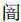

本索引据《全集》所收作品篇目首字汉语拼音音序排列，首字读音相同，按第二字音序，以此类推。作品题目相同，按卷次顺序排列；卷次相同，按页码顺序排列。篇目后的数字为《全集》的卷次与页码，如⑧67，是第八卷第67页。
A
AB与C（17）104
阿根廷的伟大作家和民主战士——纪念多明戈·富斯蒂诺·萨米恩托诞生一百五十周年（18）117
哀莫大于心死（14）307
哀启⑦420
爱（18）609
爱的小鬼⑦12
爱国也有够吗（14）475
爱护难民歌（13）461
安国访问述感（14）701
B
八方风雨（14）378
《芭蕉集》序（17）96
八九十枝花（13）157
八年所得（16）350
八太爷⑧67
“八一”建军节三十五周年纪念，献诗祝贺（13）653
把红旗插到评书界——在中国曲艺研究会召开的新评书座谈会上的发言（17）761
白石夫子千古（16）392
白鹇（13）686
白云寺（13）592
百花齐放的春天（16）400
搬家（15）328
半汉奸（14）86
包头颂（13）623
宝船（11）623
《宝船》演出前言（18）178
宝地（15）61
保民杀寇（13）451
保卫武汉与文艺工作（17）139
保我河山（13）452
抱孙⑦91
趵突泉的欣赏（济南通信）（14）11
北戴河赠四友诗（13）671
北京（14）556
北京的春节（14）433
北京的“曲剧”（16）294
北京干净——为北京解放十周年而作（15）15
北京缸瓦市伦敦会改建中华教会经过纪略（19）276
《北京话语汇》小序（18）255
北京京剧团的特点（15）183
北京市“文联“去年工作简述（18）396
北京市文学艺术工作者联合会工作总结报告——在北京市文学艺术工作者第二次代表大会上的报告摘要（18）398
《北京俗曲百种摘韵》序（17）344
《北京文艺》发刊词（18）406
北京戏剧界别让上海赶过（14）677
北行小诗（13）572
本固枝荣——对天津市爱好文学青年的一次讲话摘要（18）179
本刊半年来的回顾（14）182
比喻（16）628
壁报诗（13）473
避暑（15）240
编写民众读物的困难（17）189
别光说“真没想到”啊（14）589
别忙（15）364
别迷信（12）700
别怕动笔（16）641
别武汉（14）159
病（14）358
病（15）366
病中（韵：国韵廿五稀）（13）557
不成问题的问题⑧33
不赶走美军，无从安居乐业（15）30
不食无劳（13）789
不说谎的人⑧178
不泄气真诠（14）123
不要饿死剧作家（14）337
不远千里而来⑧119
C
参观内蒙古博物馆（13）622
参加郭沫若先生创作二十五年纪念会感言（14）276
残雾⑨1
茶馆（11）259
《茶馆》群像（13）596
长期抵抗（13）727
朝鲜人民永远胜利（15）102
陈各庄上养猪多（13）213
呈郭老（13）712
成绩欠佳，收入更欠佳（14）304
成渝路上（长诗）（13）393
吃莲花的（13）762
充实我们的学识（17）582
出口成章——论文学语言及其他（16）591
《出口成章》序（16）593
出毛病的大幺（18）479
出色的报道（18）72
储蓄思想（17）441
船上——自汉口到宜昌（14）192
创造病⑧168
创作的繁荣与提高——在北京市第三次文代会上的发言摘要（18）422
创作的自由（14）639
创作经验谈（17）424
创作与规划（17）725
春风（14）40
春华秋实⑩585
春节饯友（13）635
春节愉快（15）144
春节愉快（15）174
春来忆广州（15）178
春联（15）441
春暖花开（13）527
春暖花开宾客来（15）117
春天来了（13）194
春游小诗（13）646
辞工⑧126
慈母（13）423
此仇必报（14）124
从盖老的《打店》说起（16）568
从技巧上说（17）500
从记事练起，天天练，认真练（18）246
从军乐（小调）（13）463
从美国兵说起（14）423
从《女店员》谈起（18）5
D
答复有关《茶馆》的几个问题（17）758
答客问（17）174
答客问（17）346
答客问（17）415
答客问（文艺作家与抗战）（17）202
答某青年（16）413
答匿名信（16）471
答《小剧本》读者问（18）24
答友人书（15）507
答友问（17）782
打（游击队歌）（13）480
打刀曲（13）429
打倒近视（15）225
打倒洋八股——在第一届全国人民代表大会第五次会议上的发言（16）355
打退儿童最大的仇人（14）148
打瘟神（13）210
打小日本（12）573
大悲寺外⑦29
大地的女儿（14）453
大地龙蛇⑨355
大发议论（13）799
大好春光（13）649
大家的诗（13）513
大家都成为英雄吧（14）344
大家合作（17）785
大家评理（12）113
大家说话大家懂（14）694
大力推广普通话（14）602
大明湖之春（15）533
大时代与写家（17）110
大喜（14）529
大喜事（14）691
大智若愚（15）418
《大众电影》改刊纪念（13）656
大众文艺创作问题（17）543
大众文艺怎样写（12）640
代语堂先生拟赴美宣传大纲（15）302
但丁（18）511
当幽默变成油抹（13）756
当作家并无捷径（14）608
到了济南（13）792
悼念罗常培先生（15）10
到武汉后（14）125
悼于非

画师（15）35悼赵玉三司机师（14）298
登太白楼（13）689
登岳阳楼题“三秋图”（13）675
等暑（15）290
第二个青春（12）341
第十个春天来到了（13）196
第一届诗人节（14）311
敌与友⑧212
滇行短记（14）278
电话⑧222
吊济南（14）112
丁⑧173
顶可爱的北京（14）559
定战地于石景、金顶二山。我军驻石景作战两次，我先胜而后败。同学各有记，乃为诗以志胜概。（13）551
东方学院——留英回忆之三（14）68
《东海巴山集》序（17）472
东西⑦484
都来参加战斗吧（14）575
斗争右派，检查自己（14）655
读巴金的《电》（17）77
独白（14）236
读报笔记一则（17）796
读画小记（17）469
读了《娥并与桑洛》（18）94
读诗（17）767
读诗感言（18）111
读书（15）256
读书（小相声）（13）154
读《逃出巴尔干》（17）422
读《套不住的手》（16）559
读王培珍的日记（16）492
读小小说（18）3
读《鸭嘴涝》（17）411
读与写——卅二年三月四日在文化会堂讲演（17）397
赌（11）537
杜勒斯发高烧（小相声）（13）113
短景（15）359
断魂枪⑦320
段绳武先生逝世四周年（14）364
对对子（12）729
对话浅论（16）541
对曲剧的发展说几句话（18）143
对卅二年文艺界的希望（18）321
对于观摩演出节目的意见（17）557
对于抗诗歌的意见——在“文协”第二次诗歌座谈会上的发言（17）186
多编好相声——在相声座谈会上的讲话（18）198
多给青年们写点（14）566
多练基本功——对石景山钢铁公司初学写作者的讲话摘要（16）656
多民族的新疆必将成为极其美好的百花齐放的园地——在新疆维吾尔自治区作家代表会议上的讲话（17）731
多鼠斋杂谈（15）398
多习多写（17）383
多写小小说（17）746
多写些小戏（18）265
E
儿童节感言（14）217
儿童剧的语言（16）525
儿童主日学与儿童礼拜设施之商榷（19）264
二马①381
二期抗战（13）9
二期抗战（13）467
二期抗战得胜图（诗配画）（13）238
F
番表⑧193
反对文人无行（14）563
方珍珠⑩331
《方珍珠》的弱点（17）550
访东风人民公社而作（13）603
访问杜勒斯（小相声）（13）71
访问记（小相声）（13）111
放卫星（14）696
非正式的公园（济南通信）（14）9
粉碎杜勒斯的强盗逻辑（14）698
风格与局限（16）574
《凤》序（17）291
福星集（16）273
《福星集》序（16）275
讣告（14）335
妇女与文艺——为妇女辅导院讲演（17）385
G
改编《绕口令》（13）57
赶集⑦1
《赶集》序⑦3
感谢共产党和毛主席（14）460
钢笔与粉笔（15）294
钢帅报捷（小相声）（13）116
高高兴兴的活着（14）468
歌唱伟大的党（13）538
割盲肠记（15）389
歌声（散文诗）（13）544
歌颂朝鲜人民的胜利——介绍《跨上千里马的人民》（18）87
蛤藻集⑦309
《蛤藻集》序⑦311
各尽其力，一致爱国（14）457
个人与集体（14）643
给茅盾兄祝寿（14）367
跟战士们谈写作（17）669
更大一些的想象（济南通信）（15）199
更好地发挥文学艺术的战斗作用——在北京市文学艺术工作者第三次代表大会上的报告摘要（18）409
恭贺新禧（15）176
公社花开大院红（15）85
工作起来吧！（14）210
狗之晨⑧107
估衣（济南通信）（15）217
《古城的怒吼》演出了（17）126
鼓词与新诗（17）506
鼓书艺人⑥1
古为今用（18）38
观画（17）755
观画短记（18）188
观画记（15）226
观画偶感（17）390
观戏简记（18）63
《关友声画集》序（17）75
关于大鼓书词（17）118
关于《离婚》（17）493
关于少数民族文学工作的报告（18）448
关于“文协”（14）167
关于文学创作中的语言问题——鞍山业余文学报告会上的讲演记录（17）689
关于文学的语言问题（16）361
关于文学翻译工作的几点意见（17）646
关于文艺诸问题——在复旦大学讲演（17）446
关于写作的几个问题（17）588
关于兄弟民族文学工作的报告——在中国作家协会第二次理事会会议（扩大）上的报告摘要（18）436
关于业余曲艺创作的几个问题（17）698
关于语言规范化（17）681
关于阅读文学作品（17）672
观豫剧《花打朝》（13）659
观众与演员都真幸福（15）68
广智院（济南通信）（15）212
规律与干劲——在中国作家协会创作工作座谈会上的发言（18）8
归去来兮⑨431
归自北平（15）326
归自莫斯科（15）24
归自西北（14）226
鬼曲（13）433
鬼与狐（15）299
“国宝”（14）171
国家至上⑨99
《国家至上》序⑨101
《国家至上》说明之一（17）256
国难中的重阳（千佛山）（13）737
国庆逢秋节（13）676
国葬（13）416
过居庸关（13）549
过年（14）353
过新年（12）637
过新年（12）687
过新年（13）132
过新年（14）714
《过新年》自序（12）639
H
还想着它（14）25
海外书简（15）624
海外新声（13）409
好好学习（14）570
《郝寿臣脸谱集》序（18）152
好戏——看日本话剧团演出的《郡上农民起义》（18）267
好戏真多（18）74
好消息（13）482
好消息（18）244
好友春风携手来（15）119
和工人同志们谈写作（16）233
和工人同志们谈写作（16）235
和平（14）371
和平解放西藏（13）126
和平与文艺（14）502
何容何许人也（14）48
荷珠配（12）1
《荷珠配》序言（12）3
贺北京市美术展览会开幕（13）611
和杜宣（13）714
贺《论语》周岁（13）731
贺年（16）397
贺全国文艺界抗敌协会成立（13）565
贺日本前进座剧团成立三十周年（13）613
和魏建功（13）564
贺《文汇报》复刊（14）618
贺新年（15）111
贺新年（15）171
贺新年（13）510
贺新约（13）29
贺中国艺术剧社首次公演（14）334
黑白李⑦100
狠打瘟神（15）100
轰炸（14）161
红大院（11）327
《红楼梦》并不是梦（17）659
红十字少年（13）204
红售货员（13）198
鸿兴饭馆红旗飘（13）143
红叶（13）421
红与专（14）686
厚古薄今（小相声）（13）80
“厚今薄古”及其他（17）771
滑稽小说（17）48
化悲痛为力量（14）512
画舫斋观画（18）26
话剧的语言（16）609
话剧观众须知廿则（15）367
话剧中的表情（17）137
画像⑧153
怀友（14）215
欢送“文协”战地访问团出发（18）298
欢迎金日成首相（13）521
欢迎曲（13）518
欢迎匈牙利国家人民文工团（14）484
欢迎与欢送（15）78
欢迎！祝贺！（14）693
惶惑④1
《惶惑》后记（17）487
黄山之游——致郭老（13）691
辉煌十五春——内蒙古自治区成立十五周年献诗（13）648
回答《文艺学习》编辑部的问题（17）654
会外散记（15）27
活“武松”（13）41
“火”车⑦435
火车集⑦433
火车上的威风（12）53
火箭奔月（13）606
火葬③323
《火葬序》③325
“祸由口出”（14）689
J
基督教的大同主义（18）473
饥荒⑤853
积极发挥文艺尖兵的战斗作用（18）251
即事（13）607
集文艺界人名联句（13）582
几封信（18）629
几句不得人心的话（17）103
济南的药集（济南通信）（15）202
济南专电（慢电代邮）（15）211
记涤洲（14）22
记懒人⑧114
纪念英国伟大的现实主义作家菲尔丁（17）656
祭王统照先生（14）675
记“文协”成立大会（14）142
记写《残雾》（17）258
记忆犹新（15）162
祭子路岳母文（13）746
家书（15）577
家庭会议（12）735
假若我有那么一箱子画（15）386
坚决斗争下去（15）92
简评演技（18）42
剑北篇（长诗集）（13）251
建国的荣誉（14）374
建国十周年大庆（13）610
健康的笑声（18）124
“将军”（14）611
教授（13）742
教育与文艺（17）147
介绍北京相声改进小组（14）431
介绍两位画家（17）55
介绍《柳树井》（17）608
金黛莱（14）710
津门咏（13）673
今年的希望（15）416
今年好（13）191
今天的儿童有幸福（15）8
金喜翻身（13）228
锦绣的城（17）534
锦绣江山（15）160
精彩的小戏（18）273
京师私立小学教员夏期国语补习会纪事⑨263
景物的描写（16）207
敬悼郝寿臣老先生（15）135
敬悼卢蒙巴总理（15）115
敬悼我们的导师（15）152
敬悼许地山先生（14）266
敬悼许地山先生（14）295
酒家饭馆有文章（16）554
“九九”茶会上的讲话（18）316
救国难歌（13）722
救救电影（17）695
旧诗与贫血（14）
就业余创作和正确反映民族特点等问题答记者问（17）728
剧本习作的一些经验——在全国文工团工作会议上的发言（17）561
巨大的鼓舞力量（15）76
剧教（14）301
军民联欢歌（13）460
K
开国纪念一周年（12）715
开市大吉⑦63
凯歌（庆贺我空军再次击落美制蒋匪U-2飞机一架）（13）683
看《茶馆》排演（17）751
看穿了胡风的心（14）569
看画（17）428
看宽一点（16）648
看了《边城故事》（17）295
看了《俄罗斯问题》的彩排（17）526
看了一部好片子——《侦察兵》（17）652
看了一出好戏（18）204
看美国侵略者还怎么狡赖（14）486
看戏短评（17）395
看迎春画展（18）173
《抗日三字经》序（17）125
抗战教育（17）123
抗战民歌（二首）（13）453
《抗战诗歌集》（二辑）序（17）209
抗战戏剧的发展与困难（17）232
抗战以来的中国文艺——在内江沱江中学讲演（17）195
抗战以来文艺发展的情形（17）352
抗战与文艺——两年来全
国文艺活动的报告（18）302
抗战中的通俗文艺（17）168
抗战中的中国文艺（对苏广播）（17）207
考而不死是为神（15）230
磕头了（14）376
科学救命（13）768
可爱的成都（14）314
可爱的内蒙古（15）132
可喜的寂寞（15）168
客（18）494
肯尼迪——最地道的反动标本（15）141
空城计（13）425
控诉搂包的（12）711
哭白涤洲（14）32
哭王礼锡先生（13）567
快活得要飞了（14）133
筷子（15）384
狂喜札记（16）402
L
拉郎配（12）513
老百姓的创造力是惊人的——在中国民间文艺研究会成立大会上的讲话（17）532
老姐姐们（14）417
老年的浪漫⑦222
老牛破车（16）157
《老牛破车》序（16）159
老舍的创作（15）259
《老舍短篇小说选》后记（17）688
《老舍剧作选》越南文译本序（18）142
《老舍剧作选》序（18）44
《老舍选集》俄文译本序（17）744
《老舍选集》自序（17）518
《老舍幽默诗文集》序（13）719
老张的哲学①1
老字号⑦313
离婚②289
《离婚》新序（17）489
李承晚滚开了（小相声）（13）140
礼物（13）440
理想的文学月刊（15）343
立春大吉（15）145
立秋后（15）289
励友人书（15）480
联合起来（14）185
连环图画（17）127
恋⑧5
恋歌（13）725
两点意见（17）643
两个花鸟画展览（15）121
两条路线（13）62
邻居们⑦244
铃铛谱（12）724
灵的文学与佛教（17）285
灵格风汉语教材（19）283
留侯祠（13）573
流离（13）447
流沙观潮剧（13）638
柳家大院⑦80
柳树井（12）65
柳屯的⑦191
六千代表心一条（15）97
龙须沟⑩415
《龙须沟》序⑩417
《龙须沟》的人物（16）277
《龙须沟》写作经过（17）554
鲁迅先生逝世二周年纪念（17）163
路与车（济南通信）（15）221
旅美观感（14）408
旅行⑧100
乱形容（13）152
略谈抗战文艺（17）317
略谈普及工作（17）524
略谈人物描写（17）293
略谈提高（16）486
略谈戏改问题（17）538
《论语》两岁（13）560
论悲剧（17）722
论才子（16）444
论创作（17）5
论通俗文艺（17）150
论文学形式（17）10
论新诗（17）302
落花生（15）260
骆驼祥子③1
《骆驼祥子》和两种《龙须沟》（17）634
《骆驼祥子》后记（17）668
《骆驼祥子》拉脱维亚文译
本序（18）206
《骆驼祥子》斯洛伐克文译
本序（18）196
《骆驼祥子》序（17）501
M
马克·吐温——“金元帝国”的揭露者——在世界文化名人马克·吐温逝世50周年纪念会上的报告（18）103
马裤先生⑦45《马连良演出剧本选集》序（18）197
买彩票（13）765
满堂红歌（13）530
慢电代邮（15）219
漫画（17）449
忙（15）272
猫（15）434
猫城记②139
《猫城记》新序（17）491
毛毛虫⑦233
毛主席给了我新的文艺生命（14）487
毛主席，我选举了您！（14）535
梅兰芳同志千古（15）123
没有“戏”（17）270
美国的精神食粮（14）440
美国人的苦闷（16）387
美英要挨揍（小相声）（13）108
蒙古青年进行曲（13）490
梦想的文艺（15）414
谜（13）427
勉“舍”弟“舍”妹（13）734
面子问题⑨279
民间曲艺问题——在北大纪念“五四”文艺晚会上的讲话（17）502
民间文艺的语言（17）603
民主世界（未完）⑧429
民族团结万岁（15）74
沫若抱石两先生书画展捧词（17）437
末一块钱⑦212
母鸡（15）371
N
南游杂感（15）148
内蒙东部纪游（13）631
内蒙风光（13）625
内蒙风光（16）577
内蒙古民歌歌唱展览（14）712
内蒙即景（小诗九首）（13）627
拟编辑《乡土志》序（19）261
年光不再，逝者如斯；五载春风，瞬将毕业矣。驽钝依然，前途惘惘，乃感赋四律。（13）555
牛老爷的痰盂⑧197
牛天赐传②499
《牛天赐传》广告（15）238
农村春景（13）661
努力，努力，再努力！（14）213
怒（13）469
女店员（11）399
女儿经（新“三字经”）（13）236
P
旁观、温情、斗争（16）456
抛锚之后（13）568
呸！（14）481
陪都赞（13）23
彭六嫂（14）708
批评与批评者（18）637
批评与偏见（14）339
贫血集⑧1
《贫血集》小序⑧3
苹果车（18）727
婆婆话（15）310
扑灭暗害志愿军的奸商（14）479
Q
“七七”怀友（14）369
“七七”抗战五周年纪念（15）378
《齐大年刊》发刊词（17）52
《齐大月刊》编辑部的一两句话（18）287
《齐大月刊》发刊词（17）3
齐来打虎（15）96
起来干，不作亡国奴的人们（14）181
前进吧，中国的青年们！——为庆祝国庆节而作（14）466
前进，前进，再前进！（14）615
且讲私仇（14）120
且说屋里⑦389
且在生活上表现点爱国样子吧，哪怕是假的也可以！（14）180
覃本秀自述（13）33
勤俭持家（15）113
秦氏三兄弟（11）165
勤学苦练，提高作品质量——在大同市一个文艺报告会上的讲话（18）155
勤有功（16）656
青岛与山大（14）52
青岛与我（15）286
清明（13）503
青年（13）431
青年朋友们，再多多创作吧！（17）569
青年突击队（11）1
青年与文艺（17）252
青年作家应有的修养——在全国青年文学创作者会议上的发言（16）428
青蓉略记（14）317
青蛙骑手（12）279
青霞丹雪（12）215
情文并茂（18）100
请多注意通俗文艺（17）636
庆元宵（13）615
庆祝“七一”（13）218
秋日读书短记（17）444
取钱（15）249
曲艺（17）736
曲艺的新军（14）463
曲艺的跃进（18）257
曲艺改进在北京（12）663
曲艺界拿出干劲来（14）684
去年今日（14）253
全家福（11）475
全面地准备（18）52
群英大会（鼓词小段）（13）39
群英会颂（15）71
R
让我们狂欢吧！（15）154
让我们团结起来——在北京市文学艺术工作者联合会发起人大会上的讲话（18）386
热爱今天（18）55
热包子⑦8
人的跃进（15）106
人定胜天（14）699
人健国强（15）64
人民公社好（15）83
人民会消灭疯狗毒蛇（14）482
人同此心⑦568
人同此心（12）455
人物不打折扣（16）519
人物的描写（16）215
人物、生活和语言——在河北省戏剧创作座谈会上的讲话（18）229
人、物、语言（16）595
人物、语言及其他（16）547
人与话（18）211
人长一年，事进千里！（14）621
认真检查自己的思想（14）473
日本撤兵了（13）412
日月蚀之歌（13）411
如何接受文学遗产（17）348
入城（15）420
入会誓词（14）135
S
三点期望（14）674
三多（18）128
三个月来的济南（14）92
三函“良友”（15）615三年来的文艺运动（17）262
三年写作自述（17）272
《三四一》自序（12）563
三邪（16）468
三言两语（14）633
三言两语（17）413
散文并不“散”（16）311
散文重要（16）479
《桑子中画集》序（17）57
扫除为人民唾弃的垃圾（14）573
扫荡五气（13）74
杀狗⑦464
山高挡不住太阳——为全国青年社会主义建设积极分子大会而作（13）508
善人⑦238
汕头行（13）639
善心（14）84
上任⑦151
邵恒秋先生画展（17）471
深入生活，大胆创作（18）260
神的游戏（15）235
什么是幽默？（17）675
《神曲》（17）340
神拳（11）551
《神拳》后记（11）618
神仙辞职（13）97
沈二哥加了薪水⑧156
生产就业（12）691
生活，学习，工作（14）539
生活与读书（16）490
生活自述（14）357
生灭⑧143
生日⑩565
生日（14）207
胜利十年——胜利万年（14）592
胜利之年（歌二首）（13）495
诗二首（13）621
诗二首（13）697
诗二章（13）571
诗人（17）297
诗人节献词（17）310
诗三律（13）562
诗三首（13）644
诗三首（13）677
诗三首——中国人民坚决站在多米尼加人民一边（13）708
诗四首（13）569
诗四首（13）619
诗四章（13）579
诗五首（13）666
诗·戏剧·小说（17）381
诗谢郭老秋雨中来访（13）696
诗一首（13）658
诗与创造（18）97
诗与快板（16）302
诗与散文（17）63
十年百花荣（15）41
十年笔墨（15）47
十五贯（12）165
《十五贯》的故事（14）613
《十五贯》改编说明（12）167
十月革命颂赞（13）505
十月念一日，赴西山观察野战地势。是日大雾，抵午方晴。四年两登此山矣，为二律以志之。（13）550
试笔（16）477
是的，抗到底！（14）105
《世界文学史》讲义（17）84
士气不振（小相声）（13）104
事情要大家作（14）117
事实的运用（16）222
释“通俗”（17）146
试验田（13）82
柿子丰收（13）163
首都到处有文章（15）180
首先作一个社会主义的人——9月28日在北京国画界反右派斗争大会上的发言（14）657
暑避（15）282
蜀江船歌（13）497
蜀村小景（13）585
暑中写剧记（17）512
暑中杂谈二则（15）243
树立新风气——1957年9
月17日在中共中国作家协会党组扩大会议上的发言（16）459
述志（14）324
耍猴（济南通信）（15）208
双反（13）91
双十（14）366
谁先到了重庆⑨511
说好新书（18）207
说明白话（13）95
思想跃进的结果（15）59
四大皆空（14）341
四世同堂④⑤
四位先生（15）373
颂《中国》画册（15）80
T
她的失败⑧91
她记得！（13）477
抬头见喜（13）783
态度问题（17）571
《泰山石刻》序（17）114
谈《茶馆》（17）753
谈“粗暴”和“保守”（17）664
谈读书（16）645
谈翻译（16）317
谈《方珍珠》剧本（16）282
谈“放”（14）631
谈讽刺（17）678
谈简练——答友书（16）635
谈《将相和》（16）290
谈教育（15）270
谈快板（18）279
谈《林则徐》（18）61
痰迷新格（13）732
谈《南海战歌》（18）28
谈诗（16）297
谈诗——在文华图书馆专校演词（17）333
谈《曙光照耀着莫斯科》（17）618
谈谈文艺创作的提高问题——在中国作家协会内蒙古分会召开的文艺座谈会上的讲话（18）145
谈体验生活（17）556
谈通俗文艺（17）129
谈文艺通俗化（16）320
谈文字简练（17）764
谈《武松》（16）565
谈现代题材（16）516
谈献金（14）362
谈相声的改造（12）666
谈相声《昨天》（18）29
谈修改文字（18）76
谈叙述与描写——对北京大学中文系学生的讲话摘要（16）619
谈《阴阳五行》（18）140
谈用字（17）586
谈幽默（16）201
谈中国现代木刻——《中国版画集》序（17）497
檀香扇（15）284
唐代的爱情小说（17）34
桃李春风（（10））97
《桃李春风》赵清阁序⑩99
讨论⑧104
特大的新年（13）770
题材与生活（16）513
题高龙生涂鸭图赠卜少夫（13）575
提高质量（16）331
题静庐归雁图（13）583
题静庐写秃松小品（13）584
题“全家福”（13）561
题扇面赠马子元拳师（13）559
题赠于志恭（13）566
天桥（15）44
天山文彩——介绍《新疆兄弟民族小说选》（16）562
天书代存⑧225
《天书代存》序⑧227
《天书代存》赵少侯序⑧229
天下太平（13）760
挑起新担子（14）470
铁牛和病鸭⑦122
听来的故事⑦328
听曲感言（17）780
听王少堂老人评讲《武松打虎》有感（13）515
听相声（14）346
停薪留职（14）91
通俗文艺的技巧（17）217
通俗文艺散谈（17）133
《通俗文艺五讲》序（17）215
同广东戏剧界的谈话（18）175
同盟⑦18
童谣二则（13）475
偷生④405
《偷生》之前（17）456
投稿（15）341
头一天（14）14
土话与普通话（18）33
吐了一口气（16）505
兔⑦447
兔儿爷（15）357
团结互助，大家一起来跃进（14）682
团结颂（15）126
蜕（未完）⑧291
屯溪胡开文墨厂（13）688
W
歪毛儿⑦70
外行话（15）363
“完了”（15）292
万户更新（14）607
万寿无疆（15）156
万象更新（14）451
王宝钏（12）415
《王宝钏》前言（12）417
王春同志千古（14）483
王家镇（12）609
王老虎⑩1
王小赶驴（12）565
微神⑦51
《微神集》序（17）488
微笑（13）419
维廉·韦子唯慈（18）611
维生素（改编《菜单子》）（13）53
伟大的吉日（15）185
伟大的友谊（15）164
为被拒迁入使馆区八百余人上外交总长文（报载北平使馆区拒绝华人迁入避难。故代鸣不平）（13）791
为创作《骆驼祥子》续集向车夫调查的资料记录（19）205
为关良《凤姐图》题诗（13）586
为和平而战（13）488
为胡絜青《桃花游鱼图》题诗（13）617
为黄胄《载歌行》画题诗（13）614
为《集邮》杂志题词（13）605
慰劳（15）223
为了团结（14）645
为内蒙古百万民歌展览会献诗（13）609
为人民写作最光荣（14）464
为四位京剧演员拜周信芳为师贺诗（13）634
为天津民间剪纸题诗（13）616
为小朋友们作歌（13）446
为在华日本人民反战革命同盟会成立周年纪念题诗（13）578
为中苏伟大的友谊欢呼（14）549
未成熟的谷粒（14）242
慰问信（15）528
文病（16）625
文博士③217
文盲自叹（13）15
文牛（15）411
文武双全（14）177
“文协”的过去与将来（18）337
“文协”第二年——二十九年四月七日在重庆全体会员大会报告（18）308
“文协”七岁（18）334
“文协”与青年（14）211
文学创作和语言——在作协湖南分会举办的文学讲座会上的报告（18）217
文学概论讲义（16）1
文学修养（16）422
文学遗产怎样接受（17）409
文学语言问题（17）708
文学与作家（18）659
文艺成绩（14）234
文艺的工具——言语（17）420
文艺副产品——孩子们的事情（15）336
文艺工作者都忘我地劳动起来吧（14）587
文艺工作者忙起来吧（14）580
文艺界动员情况述略（18）312
文艺界要马上全体动员起来（14）600
《文艺思潮》讲义（17）80
文艺学徒（15）430
文艺与木匠（15）379
文艺中道德的价值（18）707
文艺中的典型人物（17）98
文艺中理智的价值（18）680
文艺作家也要增产节约（14）477
文与贫（18）331
文章别怕改（16）484
文章会（12）719
文章下乡，文章入伍（17）312
文字改革是广大人民的迫切需要（14）641
我爱川剧——庆祝成都市川剧院建院一周年（18）70
我当选为全国人民代表大会代表的感想——我还要努力学写剧本（14）547
我的创作经验（讲演稿）（17）67
我的创作经验——在市立中学之讲演（17）59
我的“话”（17）305
我的几点体会（16）501
我的几个房东——留英回忆之二（14）62
我的几句话（18）15
我的经验（18）47
我的理想家庭（15）319
我的母亲（14）326
我的暑假（15）298
“我发明的死”（18）607
我们的国家是诗的国家（17）777
我们的时代是被压迫民族翻身的时代——在首都人民支持刚果、古巴人民反帝斗争大会上的发言（15）13
我们的新生力量在成长（18）433
我们高兴 敌人心慌（15）38
我们热诚地迎接这伟大的节日（14）494
我们携起手来（14）130
我们写了些什么？（18）92
我们选举了毛主席（13）178
我们在世界上抬起了头（14）448
我呢？（14）302
我热爱新北京（14）437
我是“听用”！（15）382
我说（14）375
我所认识的沫若先生（14）273
我为什么离开武汉（14）187
我为什么写《全家福》（18）31
我羡慕你们（14）458
我要抗议（15）37
我拥护大力推行民族共同语（14）598
我有一个志愿（14）355
我怎么写的《春华秋实》剧本（17）619
我怎样投稿（15）437
我怎样写《大明湖》（16）181
我怎样写短篇小说（16）191
我怎样写《二马》（16）170
我怎样写《剑北篇》（17）434
我怎样写《老张的哲学》（16）161
我怎样写《离婚》（16）188
我怎样写《骆驼祥子》（17）464
我怎样写《猫城记》（16）184
我怎样写《牛天赐传》（16）198
我怎样写通俗文艺（17）430
我怎样写《小坡的生日》（16）175
我怎样写《一家代表》（17）578
我怎样写《赵子曰》（16）166
我怎样学习语言（17）572
我这一辈子⑦496
无名高地有了名⑥519
无题（因为没有故事）（14）79
吴祖光为什么怒气冲天（16）464
五个了不起（18）263
五虎断魂枪⑩179
五九⑦5
五年来的“文协”（18）323
五十而知使命（16）498
“五四”给了我什么（14）636
“五四”之夜（14）218
“五一”快板（13）184
五月的青岛（14）82
舞台花甲（18）153
勿忘今日（14）73
X
《西风》周岁纪念（15）350
西红柿（15）274
牺牲⑦167
希望（13）744
西望长安（11）79
《西望长安》作者的话（17）706
希望与祝贺（14）256
西洋景词画（洋片词）（13）240
习惯（15）246
习写喜剧增本领（16）482
习作二十年（17）417
习作新曲艺的一些小经验（12）651
喜剧的语言（16）522
喜剧点滴（18）65
喜联（13）588
戏剧漫谈（18）237
戏剧语言——在话剧、歌剧创作座谈会上的发言（16）527
下乡简记（15）191
吓一跳（13）222
夏之一周间（15）205
先学习语文（17）775
闲话（15）315
闲话我的七个话剧（17）373
闲谈（15）426
“现成”与“深入浅出”（12）658
献曝（17）331
献诗祝贺（为中国人民解放军第三届美术作品展览会而作）（13）684
想北平（14）55
向第二届全运会献歌（13）540
向妇女同志们致敬（15）19
向毛主席唱出我们的决心（13）542
相片（15）306
向日本话剧团献诗（13）710
相声改进了（17）511
相声改进了（17）537
相声语言的革新（18）35
向王礼锡先生遗像致敬（14）232
向相声小组道喜（14）429
向英雄的平壤人民致敬（14）527
向张士珍学习（18）83
消灭病菌（12）99
小白鼠⑧220
小报告一则（14）309
小病（15）232
小动物们（14）35
小动物们（鸽）续（14）42
小而精（18）270
小故事（18）22
小胡同的声音（15）166
小花朵集（16）475
《小花朵集》后记（16）590
小铃儿⑧93
小麻雀（14）19
小木头人⑧16
小坡的生日②1
小青不玩娃娃了⑧218
小人物自述（未完）⑧269
小说里的景物（17）25
小相声（13）69
小相声一则（13）129
小型的复活（自传之一章）（15）352
孝宾先生千古（13）587
歇夏（也可以叫作“放青”）（15）276
写家们联合起来！（14）101
写人民公社（14）703
写通俗一些（17）748
写信（13）786
写于一九五○年十月一日（14）421
写与读（17）458
写在《北京曲艺选》的前面（18）68
写字（15）253
谢谢青年朋友们的关切（14）584
新爱弥耳⑧185
新城喜见百花新（15）129
新春之歌（13）531
新刺虎（12）586
新的文学传统（16）345
新的香花（18）193
新风格（17）799
新风气（15）51
新韩穆烈德⑦405
新画片唱词（13）242
新疆半月记（16）377
新恋歌（13）491
新年的二重性格（13）773
新年的梦想（15）215
新年吉利（15）138
新年试笔（15）296
新年愉快（13）173
新年醉话（13）781
新气象新气度新生活（14）137
新青年（13）448
新曲艺应更进一步（17）600
新社会就是一座大学校（16）382
《新生》简评（16）556
新时代的旧悲剧⑦336
新“拴娃娃”（13）19
新《王宝钏》（18）213
新文艺工作者对戏曲改进的一些意见（12）672
新禧（14）672
新禧！新禧！（14）348
心中有了底（14）638
形式·内容·文字（17）341
幸福保证书（14）577
兄弟民族的诗风歌雨（18）79
兄妹从军⑧202
勖青年作家——1957年10月7日在批判刘绍棠大会上的发言（16）450
宣传工作还不够（17）251
宣传文字要通俗，结实（17）552
选择与鉴别——怎样阅读文艺书籍（18）113
薛二娘（12）623
学了什么（15）57
学生腔（16）616
学习笔记（16）334
学习当先（14）446
学习民间文艺（17）611
学一点诗词歌赋（18）168
学者（18）506
雪中行军（13）444
血点（14）196
血债——敌机狂炸重庆（14）224
Y
严惩暗中放毒的败类（14）554
言语与风格（16）227
眼福（15）32
眼镜⑦114
阳光⑦280
养花（16）385
要热爱你的胡同（14）561
要为目前的政治任务写作（17）592
要言不烦、有戏可做（18）85
要真钻，也要大胆创造（18）20
也是三角⑦133
野战归来，勇气百倍。路人目为军队移驻者。吾国积习，文武殊途，改正之责在吾辈也，乃成一律。（13）554
一点点认识（14）360
一点点写剧本的经验（17）337
一点期望（15）66
一点小经验（16）506
一点印象（16）495
“一·二八”（13）442
“一·二八”感言（14）203
一封公开信（15）553
一封家信⑦578
一个近代最伟大的境界与人格的创造者——我最爱的作者——康拉得（17）87
一家代表⑩487
一九六二年日记（1月1日～19日，2月22日～4月12日）（19）117
一九六六年调查资料 猪多肥多粮多的陈各庄大队（19）252
一九六三年日记（1月～12月）（19）172
一九六四年日记（元旦～10日）（19）224
一九六五年日记（3月20日～4月29日）访日（19）225
一九六一年日记（7月29日～9月16日）访内蒙日记（19）77
一九三九元旦（13）458
一九三七年日记（4月10日～14日）五天的日记（19）3
一九三四年计划（13）777
一九四一年文学趋向的展望（17）282
一九五九年日记（5月16日～31日）访苏日记（19）71
一九五○年日记（1月1日～12月31日）（19）5
一九五七年日记（11月4日～12月31日）访苏日记（19）57
一块猪肝⑦559
一年来“文协”会务的检讨——四月九日在年会上的报告（18）290
一年来之文艺（14）151
一年之计在于春（14）350
一天（13）748
一筒炮台烟⑧76
一些可爱的故事（18）89
一些印象（四、五、六、七）（14）1
以雪耻复仇的决心答复狂炸（14）222
艺术家也要杀上前去（17）243
亿众学雷锋（13）660
音乐的生活（13）414
银幕上的《一百个放心》（18）276
隐者（18）484
应当感谢党的领导（14）651
英国人（14）58
英国人与猫狗（15）345
樱海集⑦145
《樱海集》序⑦147
英雄赞（13）245
迎春（13）657
迎春画展（18）126
迎春饯友（15）147
拥护文字改革和推广普通话——汉民族共同语（14）596
咏茶（13）687
“幽默”的危险（17）106
由《残雾》演出谈到剧本荒（17）238
游海门、莲花峰（13）637
游合肥包公祠（13）690
游击战（13）3
游秦皇岛（13）670
游日十七首（13）702
由三藩市到天津（14）410
有关《西望长安》的两封信（16）286
友来话北平（14）88
有了小孩以后（15）322
有理讲倒人（16）375
有钱最好（15）263
有声电影⑧129
又是一年芳草绿（15）266
与日本友人的一次谈话（15）194
语言、人物、戏剧——与青年剧作者的一次谈话（16）597
语言与生活（16）604
与英国人斯图尔特·格尔德、罗玛·格尔德的谈话（18）283
浴奴⑦552
裕兴池里⑧162
元旦（14）425
元旦放歌（15）3
元旦高兴（13）604
元旦铭（13）493
元旦试笔（13）595
越短越难（16）631
越看越高兴（15）6
越南人民必胜（15）190
月牙儿⑦254
《月牙集》序（17）492
Z
在北京各界纪念鲁迅先生逝世二十周年集会上的开会词（14）619
在北京市第一届人民代表大会第一次会议上的发言（14）532
在北京市人民委员会第一次会议上的发言（18）431
在北京市文学艺术工作者联合会成立大会的开幕词（18）390
在布拉格观摩戏剧会演（14）515
在成都（14）205
在第一届全国人民代表大会第一次会议上的发言（14）544
在傅抱石赠赵清阁《红梅扁舟图》册页上题诗（13）591
在复旦大学“国父八十诞辰纪念晚会”上的讲演（14）373
在火车上（15）422
再集马派名剧——赠马连良（13）618
在捷克斯洛伐克观剧（14）524
在民国卅年元旦写出我自己的希望（15）361
在青岛青年会的演讲（15）331
在曲剧《柳树井》座谈会上的发言（17）606
在全国民间音乐舞蹈会演大会上的讲话（14）513
在全国文联主席团和作家协会主席团联席（扩大）会议上的发言（14）552
在首都纪念世界四大文化名人大会上的讲话（摘要）（17）595
在首都庆祝亚洲及太平洋区域和平会议闭幕大会上的讲话（14）505
再谈西红柿（15）280
在乡下（15）369
在新都文化界纪念鲁迅先生逝世二周年大会上的演讲（摘要）（14）195
在新歌剧改进诸问题座谈会上的发言（17）135
在中共中央党校谈文学语言问题（18）131
在中国人民政治协商会议第一届全国委员会第二次会议上的发言（14）419
在中国作家协会创作规划座谈会上的讲话（18）444
在中央戏剧学院谈话剧语言（18）137
咱们今年都要拿起笔来（16）509
赞国花（13）25
臧克家的《烙印》（17）53
怎么写快板（16）309
怎样丢掉学生腔（18）190
怎样读小说（17）392
怎样练习写稿子（17）596
怎样认识文学（17）72
怎样维持写家们的生活（17）246
怎样写快板（16）258
怎样写通俗文艺 （16）325
怎样写文章（17）450
怎样写小说（17）322
怎样学诗（17）300
怎样运用口语（17）593
赠白土吾夫（13）700
赠北京晋阳饭庄（13）679
赠陈叔通（13）608
赠涤非词人（13）581
赠冯纪法（13）577
赠关友声（13）558
赠广州部队战士话剧团（13）713
赠郭镜秋（13）594
赠康濯（13）642
赠黎波（13）701
赠李慕良（13）680
赠玛拉沁夫（13）662
赠梅阡（13）643
赠木下顺二（13）698
赠潘孑农（13）589
赠钱钟书（13）681
赠拳师马永奎扇面题词赠山月（13）664
赠汕头工艺美术陈列馆（13）641
赠申凤梅（13）663
赠沈柔坚（13）665
赠斯特朗（13）602
赠台静农（13）574
赠太虚法师（13）576
赠田仲济（13）590
赠土 善麿（13）699
赠王莹（13）715
赠闻捷（13）655
赠吴组缃（13）593
赠徐兰沅（13）636
赠荀慧生（13）601
赠友人归广州（13）669
扎兰屯的夏天（13）537
乍看舞剑忙提笔（15）439
战（13）485
战斗友谊的新页——赞影片《刘主席访问朝鲜》（18）235
战壕脚（18）723
战时文化工作诸问题（17）211
张伯苓先生七十大庆（13）498
张忠定计（12）569
张自忠⑨189
《张自忠》写给导演者⑨191
张自忠将军的战绩与殉国经过述略（14）248
丈夫去当兵（13）456
照样儿办吧（17）193
赵子曰①193
这几个月的生活（14）75
这一年的笔（14）156
真正的学校日刊（15）220
正红旗下（未完）⑧445
正义斗争必将胜利（15）18
知难而“进”（17）327
致××（15）555
致××（15）568
致××兄（15）510
致××兄（15）585
致×兄（15）590
致巴金（2封）（15）672
致《长江日报》编辑部（15）673
致常君实（15）610
致陈白尘（15）596
致陈逸飞（4封）（15）469
致陈养锋（15）574
致重庆友人（15）551
致大卫·劳埃得（44封）（15）632
致丁传陶（15）724
致富神咒（13）729
致高克毅（3封）（15）626
致高利克（2封）（15）726
致戈宝权（2封）（15）594
致郭老（13）695
致郭沫若（7封）（15）579
致何容（15）629
致何寿生（15）712
致贺致敬（15）94
致胡风（4封）（15）522
致胡乔木（15）683
致胡适（15）461
致沪友（15）526
致华小冬（15）734
致《抗战文艺》同人（15）527
致黎烈文（15）473
致李何林（15）603
致李家馨（15）709
致李同愈（15）485
致梁得所（2封）（15）482
致梁实秋（15）588
致林语堂（15）484
致铃木择郎（15）719
致铃木择郎、桑岛信（2封）（15）675
致刘白羽（15）729
致刘金涛（15）691
致刘竞（15）692
致刘以鬯（15）609
致楼适夷（15）698
致伦敦大学东方学院（9封）（15）447
致《论语》（15）506
致罗伯特·兰得（15）670
致马德清（15）721
致马连良（15）689
致茅盾（15）608
致梅隐（15）538
致美国朋友（15）681
致南泉“文协”诸友（15）561
致女友××函（15）517
致欧阳山尊（4封）（15）686
致彭桂蕊（15）576
致人民文学出版社编辑部（15）722
致日本青年朋友（15）708
致日本作家（15）733
致瑞典使馆人员（15）707
致上海友人（15）612
致尚小云（15）704
致邵力子（15）690
致施耐德（15）731
致舒宽（8封）（15）713
致宋遂良（15）725
致苏联作家协会（15）601
致台儿庄战士（15）520
致陶亢德（6封）（15）490
致王静之等（15）730
致王冶秋（5封）（15）605
致王莹（15）622
致《文艺阵地》编辑（2封）（15）529
致吴海发（15）728
致吴雪（15）703
致吴祖光（15）613
致西南的文艺青年书（15）572
致夏淳（15）720
致《现代》杂志编辑（15）472
致小朋友们（15）515
致《新港》编辑部（15）717
致休伊特·赫茨（15）631
致徐霞村（2封）（15）592
致杨居辰（15）723
致姚蓬子（3封）（15）556
致友人（15）611
致友人书（15）598
致于立群（15）732
致榆林的文艺工作朋友们（15）570
致俞寿宝（15）706
致《宇宙风》编辑（15）489
致郁达夫（3封）（15）532
志愿军是我们的模范（14）706
致章老（13）682
致张永年（15）679
致赵家璧（4封）（15）475
致赵建源（15）702
致赵景深（6封）（15）463
致赵清阁（4封）（15）694
致赵太侔（15）623
致支超明（15）680
致中国人民志愿军指挥员、战斗员（15）677
致周扬（15）541
致朱光潜（15）699
致子祥兄（15）459
制作通俗文艺的苦痛（17）155
中国民族的力量——在国立山东大学1934年上学期第五次总理纪念周上的讲演（17）61
中国现代小说（17）476
中华全国文艺界抗敌协会会务报告（18）340
小引（一九三八年五月四日）（18）340
一九三八年（18）341
一九三九年（18）362
一九四○年（18）374
一九四一年（18）379
一九四二年（18）383
中华在“九一八”后（14）175
忠烈图（12）595
《忠烈图》小引（12）595
中秋月饼（13）48
中苏同盟（12）706
中苏同盟万岁（14）416
中苏文学的亲密关系（17）738
忠孝全（投军的，唱得胜歌）（13）237
衷心的感谢（14）507
衷心的祝贺（13）519
衷心祝贺（15）21
周末游园（14）427
昼寝的风潮（13）754
祝北京市“文联”成立（18）394
“住”的梦（15）395
祝贺（14）629
祝贺（16）395
祝贺北京解放十年（13）523
祝贺北京实验京剧团建立（15）188
祝贺朝鲜人民的伟大节日（15）104
祝贺儿童节（13）188
祝贺儿童节（13）514
祝贺国庆（14）654
祝贺话剧的新胜利（18）249
祝贺《收获》创刊（14）649
祝话剧丰收（18）171
祝捷（13）678
祝宁夏回族自治区成立（13）517
住在北京（14）496
抓药⑧133
壮大青年作家的队伍（18）432
自谴（14）263
自述（14）257
自由和作家（14）622
自传难写（13）775
宗月大师（14）238
总统开嗙（13）202
走西口（12）401
《走西口》后记（12）413
走向真理之路——在文艺欣赏会致词（17）473
最光荣的时刻（14）537
最值得歌颂的事（16）508
作个先进生产者（歌词）（13）512
作家书简（15）671
作家谈写作（14）664
作诗（13）119